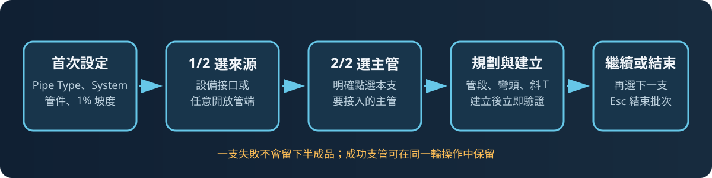
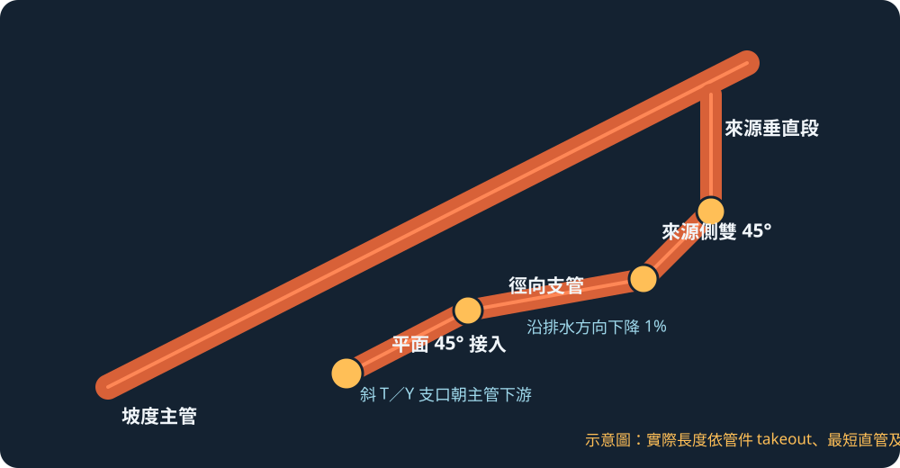

先選設備接口或開放管端，再明確選取本支要接入的主管。建立管段、彎頭、斜 T／Y 後立即驗證。
Revit 2024｜main / snapshot-676ce995fd74
SC REVIT
排水建模操作手冊
本手冊依目前 Git 原始碼更新，說明實際存在的三項操作、管件設定、接管流程、能力邊界與錯誤處理。
使用範圍：這是開發預覽功能，應先在測試模型驗收。坡度同步及更多高程情境仍在調整，不應直接批量處理正式專案。
1. 開始前
- 使用 Windows 10／11、Autodesk Revit 2024 與目前專案所需的排水管族。
- 第一次使用必須先建立並儲存管件設定；沒有匹配 Profile 時不會修改模型。
- 來源與主管必須具有可用的圓形 piping connector，且主管要有足夠的接頭與最短管空間。
- 目前可執行安裝包為
v0.5.0-drainage-dev；本手冊內容對應snapshot-676ce995fd74。
2. 目前排水 Ribbon
目前排水面板只對使用者開放下列三項操作。
依 Pipe Type 與 System Type 設定斜 T、Y、45°彎頭、變徑、坡度、管徑範圍與最短直管。
先選高程基準管，再連續選取要對齊的管段。只調整中心線高程，不會把管段接入基準管。
舊功能已移除：
45度對接、向下45° 與 垂直向下 目前不在 Ribbon 上，不應再依舊手冊尋找。3. 第一次使用：建立管件設定
- 展開「排水接入幹管」，按「管件設定」。
- 上方先選目標 Pipe Type 與 System Type，再按「新增設定列」。
- 確認 Profile 類型為
GravityDrainage。 - 依專案族群指定斜 T 三通、Y 三通、立管轉水平彎頭、45°／錯層彎頭與變徑。
- 設定支管坡度、適用管徑與最短直管。此開發版測試基準為 1%。
- 需要放寬來源系統或 FlowDirection 時，使用「進階來源規則」。
- 按「儲存設定」。不合格的 connector、角度或尺寸設定會被拒絕。
| 欄位 | 用途 | 常見問題 |
|---|---|---|
| 目標 System Type／管類型 | 決定這列設定適用的主管與新建管段。 | 選錯類型會得到 PROFILE_NOT_MATCHED。 |
| 斜 T／Y | 切入主管時使用的 junction。 | 尺寸或 connector 角度不符時不得建立。 |
| 45°／錯層彎頭 | 來源轉向、平面轉向與不同高程補正。 | takeout 過大可能導致最短直管不足。 |
| 變徑 | 主管管徑大於支管時使用。 | 族群需覆蓋實際主、支管尺寸。 |
| 支管坡度 | 控制重力排水支管沿流向下降。 | 目前坡度同步仍在調整，建立後必須抽查。 |
| 管徑／最短直管 | 限制可用尺寸並避免 fitting takeout 重疊。 | 預設 25–300 mm、最短直管 80 mm。 |
視窗保留四個主要操作：新增設定列、移除選取列、顯示全部管配件、儲存設定。進階來源規則預設允許 Bidirectional／Undefined，拒絕 In。
4. 排水接入幹管：日常操作流程

- 按「排水接入幹管」。
- 依提示 1/2 點選設備接口或任意開放管端。Pipe 有兩個開放端時，點選位置會影響 connector 判斷。
- 依提示 2/2 明確點選本支要接入的主管。系統不再自行替你挑選遠處的主管。
- 外掛依 Profile、尺寸、方向、坡度、最短直管與管件 takeout 規劃路徑。
- 成功後可直接點選下一支；單支失敗會顯示原因，確認後仍可繼續。
- 按 Esc 結束整輪命令。成功結果會合併成一次 Revit Undo。
立管接入的預期拓撲

立管不應直接拉一條長斜線到主管。預期路型為：來源垂直段、來源側雙 45°高程補正、徑向支管、平面 45°轉向、最後以斜 T／Y 接入主管。徑向段與最後接入段依 Profile 套用坡度。
建立後必查
- 支管沿排水方向是否持續下降，沒有局部倒坡。
- 立管來源側是否為雙 45°，不是 90°直角。
- 斜 T／Y 支口是否朝主管下游。
- 主管大於支管時，變徑是否使用正確尺寸與方向。
- 所有 fitting 是否真正接上 connector，沒有孤立短管。
本版路型與來源範圍
| 路型 | 用途 |
|---|---|
axis_direct | 沿來源 connector 軸線延伸後直接接入。 |
perpendicular_drop_entry | 支管與主管近似垂直且不同高程時，保留來源方向後向下斜接。 |
single_45 | 來源直管加一個 45°轉向後接入。 |
vertical_plan_turn_45 | 立管先保留垂直段，再以 45°與平面轉向接入。 |
terminal_double_45 | 來源端以兩個 45°處理立轉橫。 |
double_45 | 需要平面或高程偏移時使用雙 45°。 |
來源可為垂直、水平或傾斜 Pipe 的開放端，也可為 FamilyInstance 的圓形 DomainPiping 端口。來源已連接、FlowDirection 為 In、設定不匹配、主管流向不明或空間無法容納管件時不建立。
5. 坡度與不同高程
- 底層規則是往主管方向為低點，越離開主管越高。
- 1% 是重力排水水平支管的設定值；高程轉換段可使用符合管件與幾何的向下斜角，不代表每段都固定為 45°或 1%。
- 來源高於主管時，系統會尋找保持來源方向、向下轉換並在主管高程接入的候選。
- 來源低於主管且必須向上流時拒絕建立，不會以反坡補正。
6. 管中心對齊
- 先選一支非垂直的高程基準管。
- 連續點選要調整的目標管；系統在目標位置投影基準管的局部中心線高程。
- 按 Esc 結束。
| 目標連接狀態 | 處理方式 |
|---|---|
| 兩端皆開放 | 整支垂直移動到局部中心線高程。 |
| 一端已連接 | 保留已連接端，只調整自由端。 |
| 兩端已連接 | 拒絕調整，避免破壞既有拓撲。 |
被釘選或位於群組內的目標不會移動。此功能只調整幾何高程，不建立接管，也不等於完整坡度同步。
7. 常見失敗與排查
對話框先說明「無法建立的原因」與「下一步」，最後保留來源 ID 與技術碼供追查。
| 訊息 | 代表意思 | 處理方式 |
|---|---|---|
PROFILE_NOT_MATCHED | 來源 connector 與目標主管沒有相符設定。 | 回到管件設定檢查 Pipe Type、System Type、管徑與來源規則。 |
SOURCE_BELOW_TARGET_MAIN | 來源接點低於主管局部中心線，重力排水不能向上接入。 | 重新檢查高程或選取其他主管；不要強制反坡。 |
MAIN_DOWNSTREAM_UNRESOLVED | 無法可靠判定主管下游方向。 | 補足主管拓撲或改選方向可判定的主管段。 |
NO_FEASIBLE_ROUTE | 角度、takeout、坡度或最短直管無法同時成立。 | 增加距離、調整來源位置或高程，並確認管件尺寸。 |
JUNCTION_GEOMETRY_INVALID | 斜 T／Y 支口方向或接續幾何不成立。 | 確認主管流向、管件族支口方向及設定列。 |
MAIN_END_CLEARANCE | 接入點距主管端部太近。 | 選擇離端點較遠的位置或延長主管。 |
PLANNED_PIPE_TANGENT_TOO_SHORT | 扣除彎頭與 junction takeout 後沒有足夠直管。 | 拉開來源與主管距離，或換用 takeout 較小且經驗證的管件。 |
SIGNED_SLOPE_INVALID | 支管沒有形成設定坡度，或排水方向相反。 | 檢查主管下游方向、來源高程與 Profile 坡度。 |
安全行為：單支失敗時該支 Transaction 會回復，不應留下切斷主管、孤立 fitting 或半成品短管。
8. 測試模型驗收清單
- 同徑與 100×80 變徑各測一支。
- 垂直、水平與傾斜開放管端各測一支。
- 至少一支立管驗證來源側雙 45°與平面 45°接入。
- 至少一支故意使用不匹配 Profile，確認模型沒有被修改。
- 量測每段實際坡度；目前 1% 為測試基準，但仍須人工抽查。
- 完成五支後測試一次 Undo 是否能復原整輪操作。
版本邊界：後續實驗中的「斜 T 支口向上旋轉 45°，搭配兩個 45°彎頭」新優先路型不屬於此快照，也不應出現在本版正常結果中。